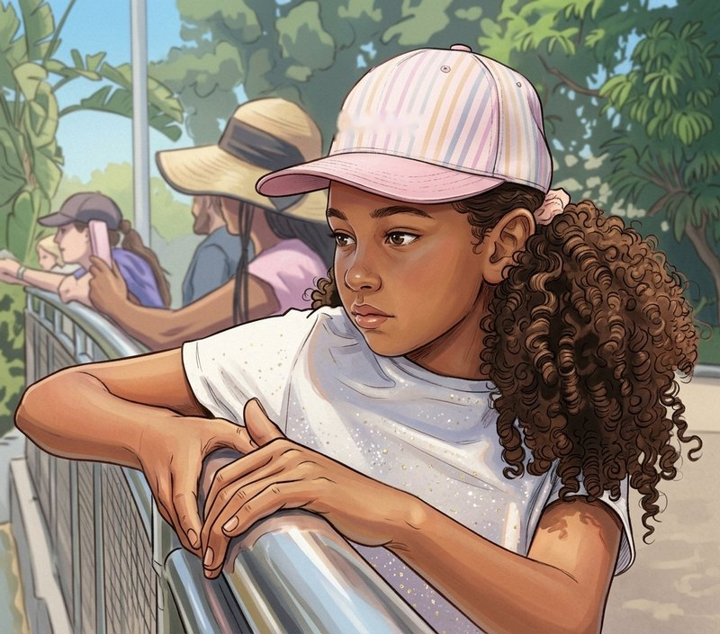

Hi, I'm Z. A. Aweke.
I write diary-style mysteries about fairness, friendship, and finding the courage to speak up when something isn't right.

About the author
Z. A. Aweke is a middle-grade author who loves stories with a big heart and a good mystery. Every book starts with one question: what would you do if something unfair happened and no one believed you?
Framed is the debut novel, told in a diary-style voice so readers feel like they're right there in the story. More books are on the way.
What you'll find in these stories
Mystery
Clues, secrets, and a puzzle that keeps you turning pages.
A diary voice
Told in the first person, so it feels like reading a friend's private notebook.
Speaking up
Stories about doing the right thing, even when it's hard.
Now available: Framed
What happens when the principal is not your pal? Find out in the debut middle-grade novel for ages 8–12.